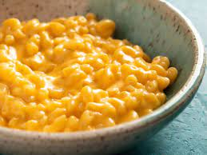

Austin's Mac & Cheese!

About this recipe
The humble dish of macaroni and cheese is a wise choice if pursuing the finer things in life
Make this dish if you want to live luxuriously!
Ingredients
- rigatoni
- sharp cheddar
- nutmeg
- cayenne
- milk
- butter
- flour
- olive oil
- love
Steps
- Create the rue with butter, olive oil and flour
- Add some milk and maybe a dash of nutmeg and cayenne
- After the milk has heated and started to cook, slowly add cheese while stirring
- You should've been boiling water and cooking the pasta by now! So do that if you haven't
- Combine pasta and cheese sauce. Let sit for a few minutes or bake it in the oven. Add spices as needed!
- Enjoy!